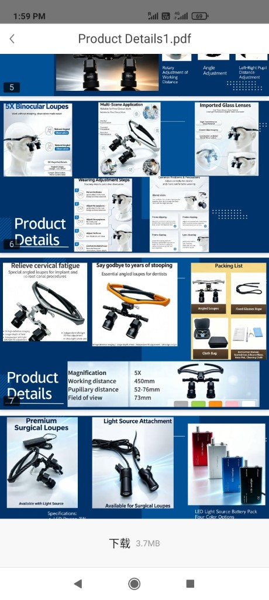

<!DOCTYPE html>
<html lang="en">
<head>
  <meta charset="UTF-8">
  <meta name="viewport" content="width=device-width, initial-scale=1">
  <title>Lima Surgical Equipment · Surgical loupes for dentistry & surgery</title>
  <meta name="description" content="Lima Surgical Equipment supplies surgical loupes, angled binocular systems, and LED loupe lights for dentists, oral surgeons, ENT, and theatre teams. Inquire and pre-order on WhatsApp.">
  <link rel="preconnect" href="https://fonts.googleapis.com">
  <link rel="preconnect" href="https://fonts.gstatic.com" crossorigin>
  <link href="https://fonts.googleapis.com/css2?family=Fraunces:opsz,wght@9..144,500;9..144,640&family=Outfit:wght@400;500;600&display=swap" rel="stylesheet">
  <link rel="stylesheet" href="css/styles.css">
</head>
<body data-page="home">
  <script src="js/config.js"></script>
  <script src="js/products.js"></script>
  <script src="js/app.js"></script>
  <script>
    LimaUI.mountShell("home");
    document.getElementById("app-main").innerHTML = `
      <div class="wrap">
        <section class="hero">
          <div>
            <span class="eyebrow">Lima Surgical Equipment</span>
            <h1>See more. Stoop less. Operate with a stable optical field.</h1>
            <p class="lead">Surgical loupes enlarge the operating site so dentists, oral surgeons, ENT clinicians, and theatre teams can work with a natural head angle. This catalogue covers only the loupes, lights, and cases shown in the product sheets — prices are confirmed on WhatsApp.</p>
            <div class="hero-actions">
              <a class="btn btn-wa" href="${LimaUI.waUrl("Hello Lima Surgical Equipment, I want to choose a surgical loupe.")}">${LimaUI.iconWa()} Order on WhatsApp</a>
              <a class="btn btn-dark" href="products.html">Browse the catalogue</a>
              <a class="btn btn-ghost" href="why-loupes.html">Why loupes are used</a>
            </div>
          </div>
          <div class="hero-panel">
            
            <p>Angled 4X–6X systems, TTL pairs, coaxial LED lights, and fitted cases — click any product to open WhatsApp with specifications and a pre-order request.</p>
          </div>
        </section>
        <div class="stats">
          <div class="stat"><b>2.5X–6X</b> Magnification range in this catalogue</div>
          <div class="stat"><b>Coaxial LED</b> 3W and 5W lights, 15 000–30 000 lux</div>
          <div class="stat"><b>Pre-order</b> Colour, power, and PD confirmed before dispatch</div>
          <div class="stat"><b>10–28 days</b> Typical delivery after confirmation</div>
        </div>
      </div>
      <section class="section">
        <div class="wrap">
          <h2>Featured from the product sheets</h2>
          <p class="lead">Every item below is taken from the supplied catalogue. Tap WhatsApp to send the spec sheet automatically, or open full details first.</p>
          <div class="grid" id="home-grid"></div>
        </div>
      </section>
      <section class="section">
        <div class="wrap split">
          <div class="panel">
            <h2>Built for dental lists</h2>
            <p>Restorative margins, implant osteotomy, and root-canal orifices are millimetre-scale. Loupes make those landmarks binocular and bright, while angled barrels keep the cervical spine closer to neutral through a four-hour session.</p>
            <ul class="ticks">
              <li>General practice, endodontics, implant, perio</li>
              <li>Wear over myopia glasses or order custom TTL PD</li>
              <li>Clip-on or cable LED so the mouth is not in your own shadow</li>
            </ul>
            <a class="btn btn-dark" href="sectors.html">Dental & surgical sectors</a>
          </div>
          <div class="panel">
            <h2>Built for surgery-related work</h2>
            <p>ENT, minor oral surgery, and other close-field procedures need a stable stereo image and a light that travels with the operator. Magnetic 4X/5X/6X barrels let a department share one frame across mixed lists.</p>
            <ul class="ticks">
              <li>ENT, stomatology, theatre close work</li>
              <li>Interchangeable magnification on magnetic mounts</li>
              <li>Pre-order with delivery window confirmed on chat</li>
            </ul>
            <a class="btn btn-ghost" href="why-loupes.html">Clinical reasons to magnify</a>
          </div>
        </div>
      </section>
    `;
    LimaUI.renderCards(LIMA_PRODUCTS.slice(0, 6), document.getElementById("home-grid"));
  </script>
</body>
</html>
